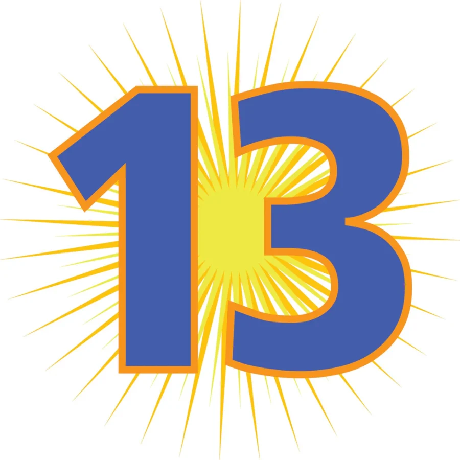

13-Year Anniversary Group Show
Vertical Gallery is very proud to present its 13-Year Anniversary Show, an all-star group exhibition commemorating 13 years at the vanguard of street art, pop surrealism, graffiti and beyond.
Vertical’s 13-Year Anniversary Show, on view from March 13 through April 19, marks the gallery’s return to Chicago, where its story began. All work will be displayed inside Jackson Junge Gallery, located in the city’s bustling Wicker Park neighborhood.
“This is our first show of 2026, and our first show back in Chicago since we changed our business model to online and special exhibitions,” says Vertical owner Patrick Hull. “I am excited to see everyone, and to celebrate our anniversary!”
Vertical’s 13-Year Anniversary artist roster brings together 13 longtime collector favorites and emerging talents from across the city, across the nation and across the globe, showcasing the consistency and diversity that have remained hallmarks of the gallery’s monthly programming efforts since its inception. The 13 artists are (in alphabetical order):
Andria Beighton
Blake Jones
Grant William Thye
Jerome Tiunayan